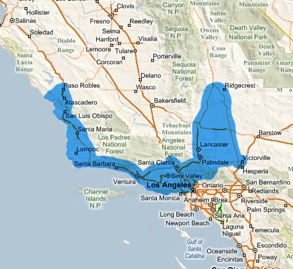

- Home
- About Us
- Contact
- F.A.Q.
- Blog
- GALLERIES
- Swimming Pool Gallery
- Award Winning Pools
- Commercial Pool Gallery
- Spa Gallery
- Waterfeature Gallery
- BBQ / Fireplace / Decking Gallery
- Tile & Coping Gallery
- Lighting Gallery
- Patio Cover Gallery
- Pool Accessories Gallery
- Swimming Pool Video
- LEARN
- Pool Construction
- Pool Re-model
- Pool Equipment
- Energy Savings
- Solar Heating & Energy
- Maintenance Warranty
- APSP
- Brochure 1
- Brochure 2
Frequently Asked Questions
Q. At what price do your pools start at? Spas?
Q. How long will it take to build a pool?
Q. Is a pool cheaper during winter or if paying cash?
Q. What is the difference: in-ground gunite pool, vinyl, fiberglass?
Q. Are black bottom pools warmer?
Q. How can I learn about available materials and features for my pool?
Q. What is the cost of operating a pool and spa?
Q. What are the conditions of your warrantys?
Q. What is the payment schedule, is a down payment necessary?
Q. Who handles permits?
Q. Who deals with my HOA?
Q. Who is responsible for my pool perimeter and gates?
Q. Who do I contact about my construction questions?
Q. Will my concrete deck crack?
Q. Why does the cost of a new pool keep rising?
Q. How do I calculate the gallonage of my pool?
Q. What are some links I may find useful?
Q. In what areas of California do you build?

Q. At what price do your pools start at? Spas?
A. The average residential pool is starting at around $35K. The size of the pool you have in mind, chosen materials, and the necessities of its construction in your backyard determine cost. Every backyard is different, we must see your property to give you a definite quote. Free standing spas even though smaller require excavation, steel, and gunite, as any project. Do not expect the cost for an unattached in-ground spa to be comparable to its fiberglass counterpart. We build only permanent solid structures.
Q. How long will it take to build a pool?
A. Typically it will take 60 to 90 business days to complete the average pool. As per our contract with you, Ventura Pool & Spa only receives payment after each phase of construction. You can be sure we want to keep moving along. Among things that could delay construction include tardy city inspections, weather, and frequently we wait on our customers to make certain aesthetic material choices. We can build any time of the year. If you want to swim this coming summer, you need to allow for a few months of lead time for construction.
Q. Is a pool cheaper during winter or if paying cash?
A. No, it is not any cheaper. While costs have stabalized to some degree as of late, there is still a slow rising of costs for material, labor, insurance, and all other business necessities. See details of rising costs in an answer below. To ensure the best price, buy a pool as soon as you can.
Q. What are the advantages to an in-ground gunite pool verses vinyl liner or fiberglass?
A. An in-ground gunite pool is a permanent structure and the city sees it as an extension of your house, that is why your property will be worth more with a pool.
A vinyl liner pool will have a lower install cost verse a gunite pool. Vinyl pools have a durable steel shell framing, the structure over which the liner is placed. The liner will need replacing approximately every 5-6 years, whereas plaster is 10-15 years. However, those are very conservative estimates and your experience is highly subject to your maintenance habits.
Fiberglass structures including installation are typically the most expensive solution with little to no added benefit. They too need periodic resurfacing.
At this time we only offer in-ground gunite pools and spas.
Q. Are black bottom pools warmer?
A. Generally you will only notice a nominal difference, if any. If you are interested in free heat you will greatly enjoy the solar bubble cover we include for free with every pool and spa, which if used properly could give you a 10-15% increase in heat. Also, we highly suggest using solar panels or a heat pump to heat your pool, see our "Energy Savings" web section for more information.
Q. How can I learn about available materials and features for my pool?
A. Visit the Pool Gallery, Equipment and Energy Savings sections of this website and schedule a meeting. A representative would be happy educate you on all the options available in material choices, water features, and equipment.
Q. What is the cost of operating a pool and spa?
A. There are four basic costs to pool or spa maintenance and operation, electricity, gas, chemicals, and water. Every pool is different, consult your Ventura Pool & Spa representative for details concerning your plan. However, keep the following in mind. Your electrical costs are based mostly on pumps, how many, how big, and how long they run. Gas is solely based on the use of your gas pool/spa heater, fireplace (firepit), or BBQ. Chemical maintenance includes the use of a form of salt or chlorine compounds, the needs of which are constantly changing. You already know the cost of water in your particular area, the biggest cost is filling the pool the first time, thereafter, technically you would only need to add water as it evaporates.
Q. What are the conditions of your warrantys?
A. The shell of your pool (the gunite structure) is guaranteed for the life of your ownership. The plaster and equipment have a full warranty for 3 years under your ownership. Please see a copy of our contract for details.
Q. What is the payment schedule, is a down payment necessary?
A. Ventura Pool & Spa only asks for money after each phase of construction and the payments are broken into percentages. Everything will be provided for you in detail on your contract. Typically you will have 5-6 payment points.
Q. When can you start?
A. Now. As soon as we create a plan with you, sign contracts and secure your financing (if applicable) we schedule a dig date that works best for you. We require you to attend the ground breaking, as you will have a chance to change the pool shape and size before we are locked into the design.
Q. Who handles permits?
A. We take care of the city, fire, and optionally health and soil permits (if applicable).
Q. Who deals with my HOA?
A. Ventura Pool & Spa will comply with all HOA’s requests but will not contact your HOA on your behalf. You are responsible for your pool design being in compliance with your HOA. If neccessary we will give you any materials requested by your HOA. Your HOA has the authority to halt construction if they have reason. We require you to get your plans approved by your HOA before construction.
Q. Who is responsible for my pool perimeter fencing and gates?
A. We have contractors we can recommend to you or package the fencing in with the pool. Usually your property fence will be sufficient as a pool perimeter. Typically all that is required is a 5’ high self closing/self latching gate, wood or wrought iron that has no horizontal bars closer than 45" together. Before we can finish a pool a city inspector will require you to have a fences and gates that passes code.
Q. During construction who do I contact about my construction questions?
A. Call us directly at 805-484-4563.
Q. Will my concrete deck crack?
A. Yes, Southern California has extremely expansive soil. This means your soil is prone to swell when it comes into contact with water or moisture and shrink when dry. The swelling causes concrete to lift, these stresses cause cracking. In all likely hood, yes, you will get hairline cracks in your concrete. The concrete is a non-pliable material and it rests on your volatile dirt. In areas of extreme weather and temperature change, especially the Antelope Valley, cracking can happen weeks or sometimes even days after we pour cement. This is not a fault of materials or craftsmanship. For more information you can read the material prepared by the city of Torrence by clicking on the link below. We recommend using pavers.
Q. Why does the cost of a new pool keep rising?
A. If you ask your parents how much they paid for their pool, you’ll find it to be a significantly different number than costs today. Inflation plays a part of increased cost, mostly you are seeing the dramatic rise of material, labor, and insurance fees. At Ventura Pool & Spa we understand the importance of your investment in the construction of your pool. The following briefly describes major contributors to the rising costs for a new pool.
Your pool shell is made of gunite, a type of cement, and we pour concrete around most pools so that you may have a walking area, this adds up to quite a lot of cost in concrete alone. According to the Portland Cement Association, a trade association our domestic production has slowed considerably. This leaves our nation with the burden of price increase based on supply and demand. During the fist half of 2004 rates for the material increased 13%.
Steel is added to strengthen the shell of your pool, and like concrete, it has similarly been effected by foreign markets. Adding to the problem, tariffs and sanctions have made the American steel market highly volatile. In 2004 different sectors of the steel mill industry saw their own cost increases exceeding 60-100%.
I could include detailed information about the rising costs of crude oil products such as gas and diesel, but I’m sure your wallet has already given you this. Ventura Pool & Spa is not immune and is billed weekly for fuel surcharges for every truck and tractor that comes to your home during construction. Remember when diesel used to be cheaper than gas?
Construction labor wages for Southern California increased more than 25% from 1995-2005. Most of the skilled workers who are in your backyard constructing your Ventura Pool & Spa pool are paid higher wages than that of industry averages. We pay a higher premium to ensure a lasting work relationship with the highest skilled laborers and craftsmen available. We pride ourselves on making high quality pools and provide a team capable of performing to your expectations.
Did you know between 1995 and 2002, the average medical cost per worker compensation claim in California more than doubled? Among other factors, this led California’s Workers’ Compensation Insurance Rating Bureau (WCIRB) to ask for a totaled 63.8% rate hike during that same period. Rates continue to fluctuate and will rise on the need of insurers to increase their loss reserves.
Every day our sales staff at Ventura Pool & Spa are asked, “when is the best time to buy a pool.” I am confident after reading this segment and doing your own research you will come to the same conclusion. The best time to build a pool, with your family’s budget in mind, is now.
References of interest:
- http://www.bls.gov
- http://www.dir.ca.gov
- http://data.bls.gov
- http://www.totalenergy.com
- http://www.cegltd.com
Q. How do I calculate the gallonage of my pool?
A.
Use this calculation:
Longest length of pool * Widest width of pool * Average Depth * 7.5 = Gallons